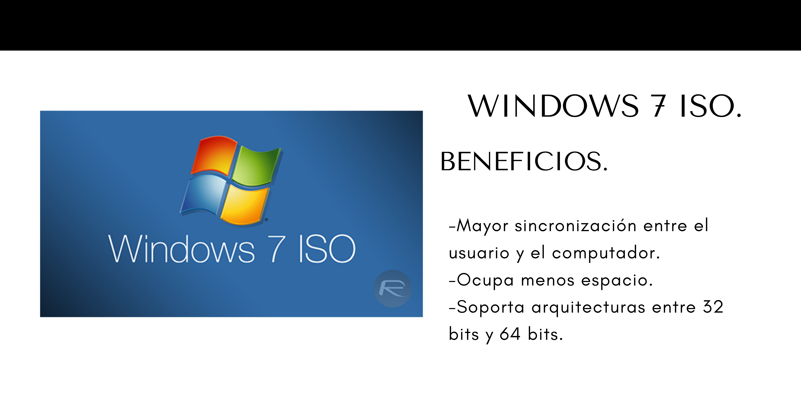
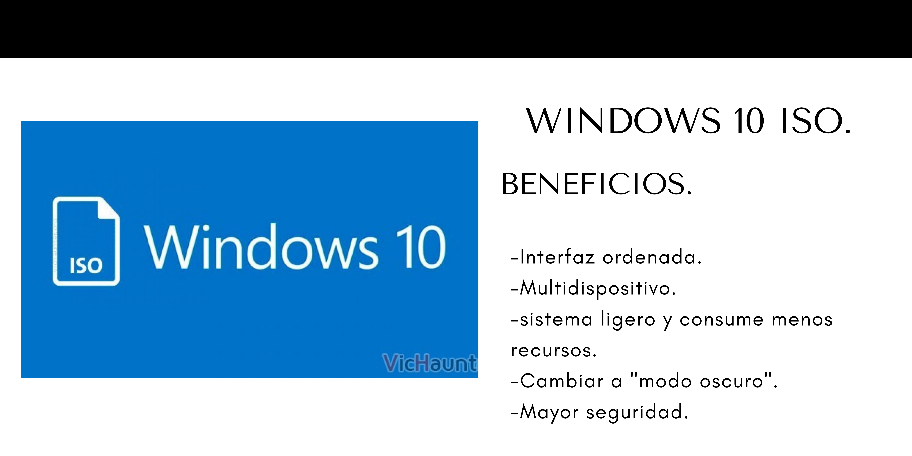
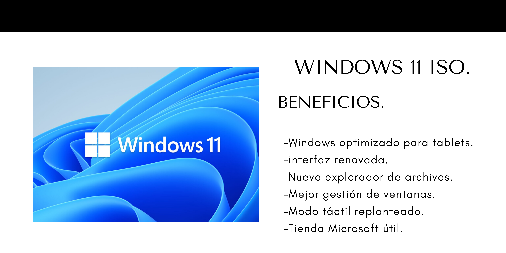

Se llama "formateo de disco", o simplemente "formateo", a la serie de operaciones realizadas con el fin de restablcer un disco duro, una memoria USB o cualquier dispositivo que albergue datos, a su estado original, borrando, de forma no definitiba, los datos que este contiene.
Ya sea que el formateo se realice debido a un problema en la computadora o simplemente para actualizar el sistema, es importante hacer una copia de seguridad de todos los datos importantes en la PC; de lo contrario, los archivos se perderían. Hacer copias de seguridad es vastante fácil y los sistemas operativos en estos días solicitan a sus usuarios que hagan copias de seguridad de los archivos incluso cuando la computadora se acaba de comprar, ya que ahorra tiempo en caso de emergencias.
Razones por las que debes formatear tu computadora.
-La computadora no se inicia. Es posible que la computadora no se inicie debido a ataques de virus u otros cambios en la configuración.
-Tu disco duro está lleno. Es recomendable porque así es la forma más fácil de eliminar todos los datos no deseados y ahorra mucho tiempo.
-Demasiados errores.
Para formatear una computadora necesitamos una imagen ISO grabada en algún dispositivo que se pueda conectar con la computadora. Algunos tipos de formateo que cuenta Guerrero Computer son los siguientes:


